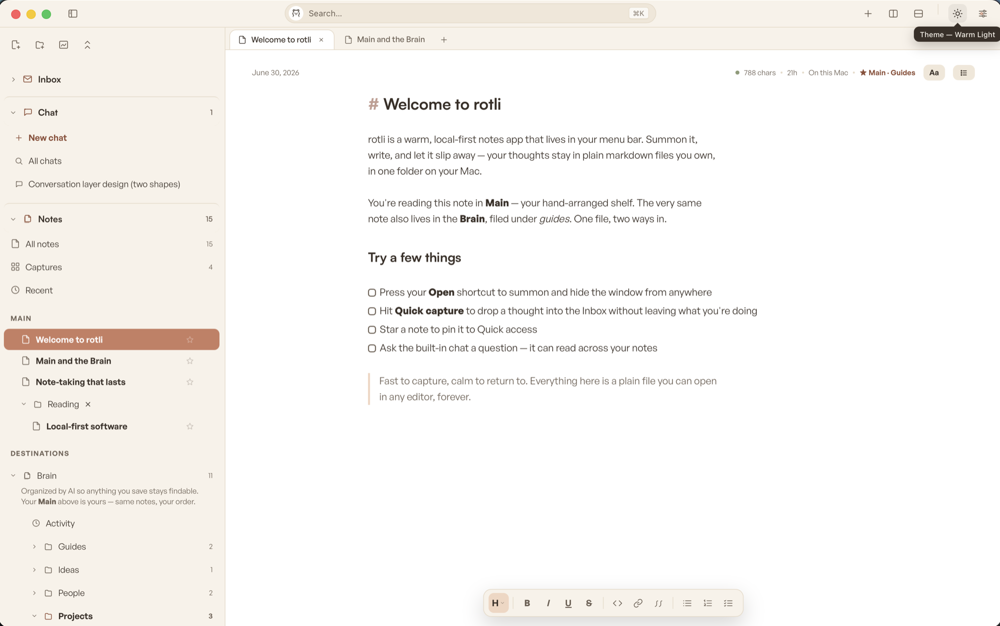

A warm, local-first notes app that lives in your Mac's menu bar.
One brain, six fronts — where we are, and what's next.
Shipped & verified
Now — verify & polish
Next — to build
Horizon

Shipped
the foundation + today's redesign — all verified (tsc · hex · vite build · cargo test 21/21 · Playwright)🪟 The shell
- Menu-bar visitor — no dock icon, no ⌘Tab
⌥Spacesummons · dismiss and it's gone⌥Cquick capture from anywhere → Inbox- Stay-open & show-in-Dock settings; tray toggle
🗂️ The corpus
- Every note a plain
.mdin~/Documents/rotli - 4–5 line frontmatter · atomic writes · fs watcher
.rotli/index + settings + viewstate — fully rebuildable- Persistence: theme, panes, widths, selection all remembered
✍️ Hybrid editor
- Raw active line, everything else renders
- Lists · tasks · quotes · bold/italic/underline/strike/code/highlight/link
- Floating format bar ·
Aatypography (never written to files) - Multi-line text selection across rendered lines
🔲 Panes & tabs
- Two labeled split buttons — right (
⌘D) · down (⌘⇧D) - A tab strip in every pane, close ×, drag to reorder
- Drag tabs across panes · pull to a pane edge to split
- Drag-resizable dividers & rails, all remembered
🎨 Six appearances
- Warm Light · Warm Dark · Paper · Charcoal
- Liquid Glass — 4 hues, frosted/clear, paper canvas
- Sidebar now frosts with the glass (fixed today)
- Focus mode
⌥⌘F— one centered column (fixed today)
🧭 Unified sidebar new
- One clean compact tree (replaced two panels), one toggle
- Destinations: Inbox · Brain · Storage · Archive · Trash
- Expand inline to title+date rows · nested folders · live counts
- Counts & views exclude Archive/Trash
♻️ Never-delete lifecycle new
- rotli never removes a file from disk — Finder is the only hard delete
- Archive / Trash / Restore = recoverable moves (id preserved)
- Hover buttons · drag-onto-destination ·
⌘⇧Aarchive originfrontmatter restores a note to where it came from
⌨️ Discoverability new
- Hold ⌘ → a grouped map of every shortcut
- Focused-list j/k nav (Enter open ·
/filter ·mmenu) - Editor slash menu —
/inserts headings/lists/quote/code ⌘Kpalette: notes + every action · every hotkey rebindable
Now — verify & polish
surfaced by the post-redesign readiness audit, before full hands-on testing🧪 Live on-disk test do first
- Run
bun run tauri devand exercise move/archive/trash/restore on a real corpus - Confirm files physically move under
Archive/·Trash/with anorigin:line, and restore returns them - The TS→IPC→Rust seam is the one path verified only in-memory + by
cargo test
⚖️ Decisions & edges
⌘⇧Aarchives the note you're editing — intended, or guard to non-editing focus?- EmptyState shows if only Archive/Trash hold notes (Inbox welcome note normally prevents this)
- Capture → Inbox under the shell (separate webview) — confirm live
🧹 Cosmetic cleanup
- Collapsed-reveal overlay uses a 240px fallback, not the saved width
- Two near-identical "toggle sidebar" actions in Settings → Hotkeys
- Orphaned
.folders/.notelistCSS comments to sweep
Next — to build
the near roadmap🧠 smBrain wiring planned
- Point Brain →
~/smBrain(you're building smBrain now — untouched) CorpusRoot{id,label,abs_path}multi-root; ids becomeroot:path- Per-destination directory picker — "point Storage into Brain, or separate"
- Today's reserved-folder model upgrades cleanly into it
🏷️ Tags
- A
#hashtagmodel (parse + index across the corpus) - A Tags lens in the sidebar (the reference's "TAGS")
- Multi-select union filtering · hierarchical tags
📁 Corpus actions
- Folder rename / delete (currently deferred — service throws)
- Empty Trash — the only hard delete (
corpus_purgebuilt, unwired) - Right-click context menus (the keyboard
mmenu exists today)
🔎 The index → real search
- SQLite FTS5 —
⌘Kbecomes true full-text search - Fenced code blocks (slash "Code" is inline backticks today)
🎙️ Dictation → v1 v1
- Bundled local STT (Parakeet), cleanup by default
- Speak it; the corpus stays plain markdown
Horizon — the six fronts
one brain, six fronts — Notes is live; the rest read the same corpus🌅 The modules
- Chat — talk with your corpus
- Voice — speak it
- Memory — recall across everything
- Inbox & Board — feed it & arrange it
🧩 The principle
- The folder of files is the product — every front is a reader
- Nothing phones home · no account · offline is the default
- Warm, quiet, instant · free local forever